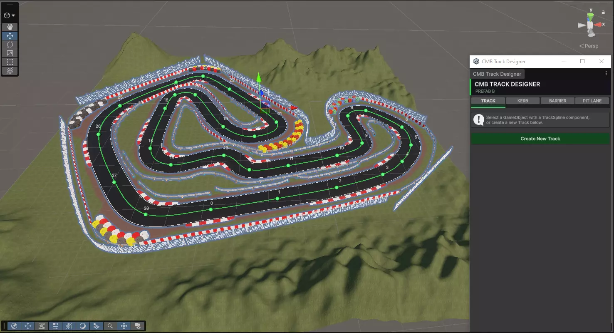
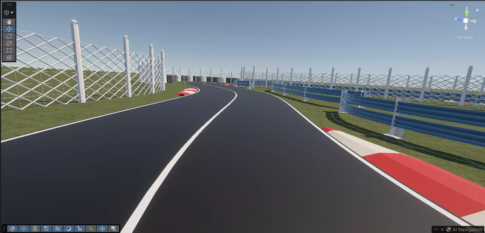
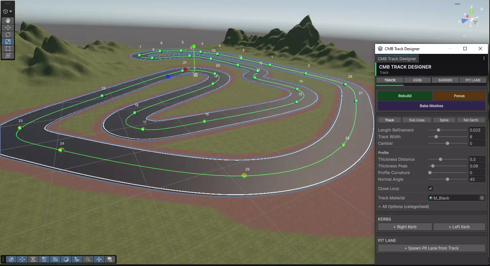
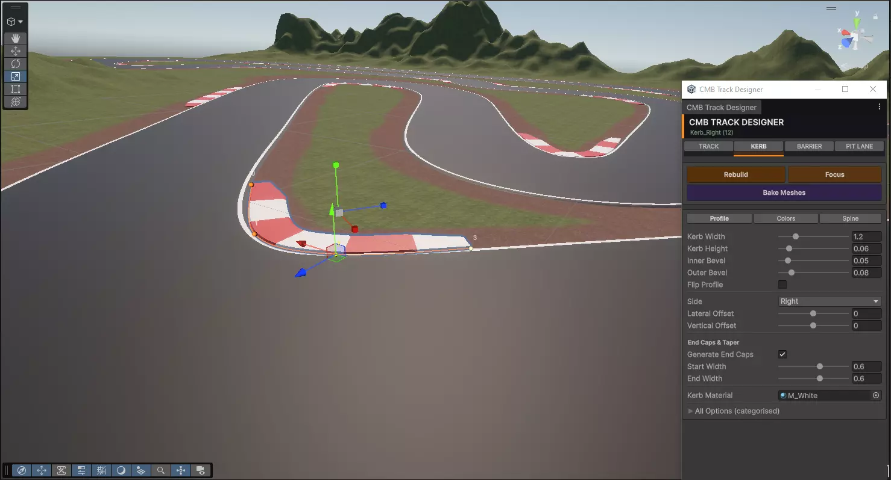
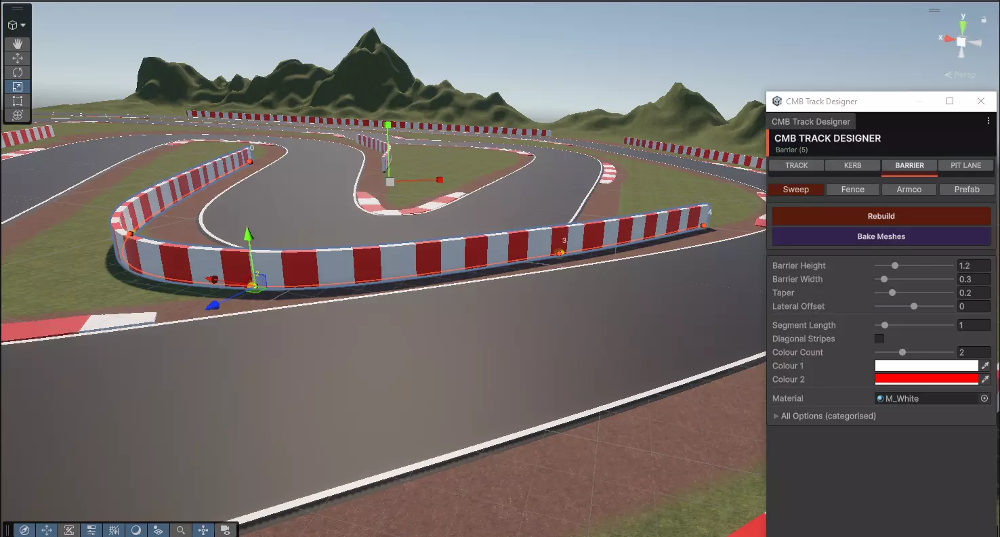
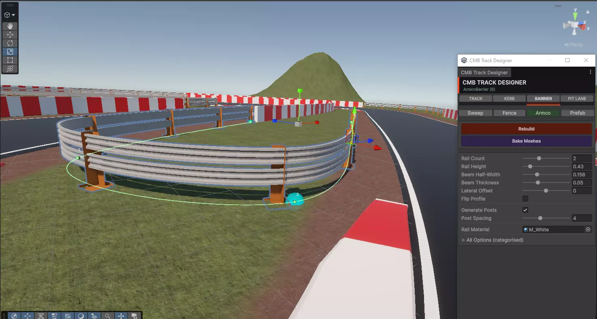
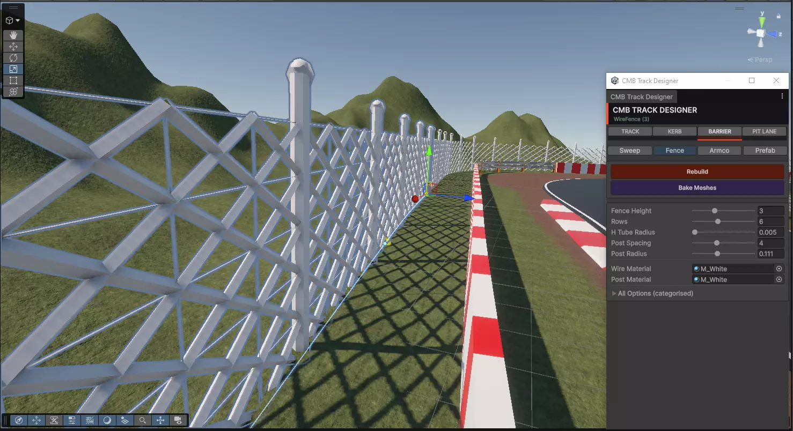
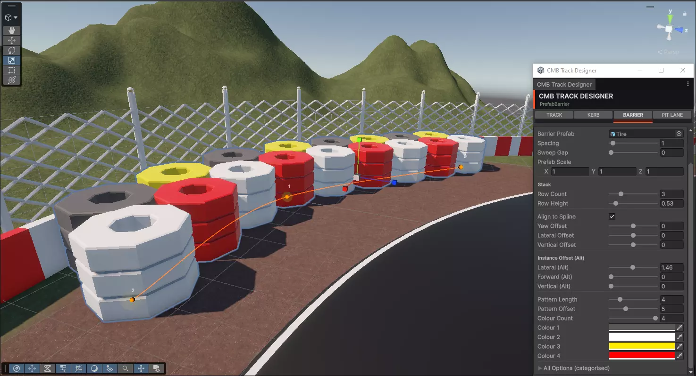

CMB Track Designer
Design complete race circuits using intuitive spline-based tools —
no manual modelling, no topology headaches.









About CMB Track Designer
CMB Track Designer is a spline-based level design toolkit for Unity that lets you sculpt full race circuits with smooth, flowing paths — all inside the Unity Editor. Draw your circuit outline, adjust control points, and watch the road mesh, kerbs, and terrain blend generate automatically along your spline.
It is built for designers who want to iterate quickly without being blocked by 3D modelling skills or geometry constraints.
Key Features
Spline-Based Layout
Draw and reshape circuit paths with Bezier splines directly in the Scene view.
Auto Road Mesh
Road geometry, width, and banking are generated along the spline automatically.
Kerb & Barrier Generation
Kerbs, barriers, and run-off zones follow the spline with configurable parameters.
Terrain Blending
The surrounding terrain conforms to the circuit layout without manual sculpting.
Modular Checkpoints
Checkpoints and start/finish lines are placed automatically along the circuit.
Rapid Iteration
Adjust any control point and see the entire circuit update instantly in the editor.
Technical Details
- Engine: Unity 2021.3 LTS and above
- Render Pipeline: Built-in, URP, HDRP compatible
- Platform: Editor-time tool — works on all Unity build targets
- Package size: Lightweight — no runtime overhead